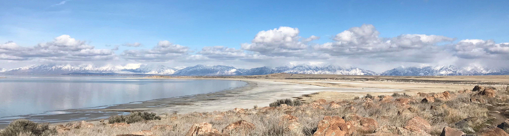

Biosketch
I am an atmospheric scientist who specializes in land-atmosphere interactions. Specifically, my interests lie in anthropogenic aspects of the carbon cycle. I study the high resolution dynamics of CO2 emissions from cities like Los Angeles (CA) and Salt Lake City (UT). I leverage several tools to study these emissions such as atmospheric models, ground-based measurement networks, and space-based observations. Before focusing on urban emissions, I spent time as a high school math teacher, community college physics instructor, and research assistant in a plasma diagnostics laboratory. I am now an incoming Postdoctoral Fellow at NASA's Jet Propulsion Laboratory. If I'm not knee deep in research, you can catch me hiking, playing piano or violin/fiddle, or relaxing back home in North Carolina.


Research Groups and Projects
Links to current and previous lab groups/projects can be found here. This includes the Land-Atmosphere Interaction Research (LAIR) Group and the Global Change and Sustainability Center (GCSC) at the University of Utah, the Marland Group at Appalachian State University, and NASA's Orbiting Carbon Observatory (OCO) projects.
LAIR Group GCSC Marland Group OCO-2 Project OCO-3 Project
